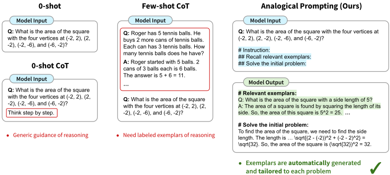
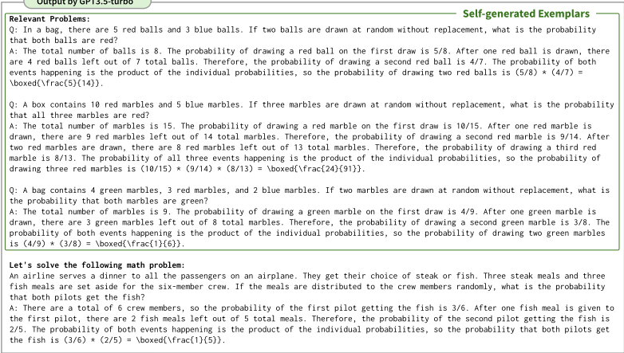

大语言模型作为类比推理器（Large Language Models as Analogical Reasoners）
论文针对 CoT 提示的两难困境：0-shot CoT（如 'think step by step'）指引过于泛化，难以应对代码生成等复杂任务；few-shot CoT 效果好但需要为每个任务人工标注推理示例。作者提出 analogical prompting：在单个提示中让 LLM 先自生成与目标问题相关的示例题解，复杂任务（如 Codeforces 代码生成）还先生成核心概念与算法教程类知识再生成示例，最后求解原问题，全程无需标注数据或外部检索。在 GSM8K、MATH、Codeforces、BIG-Bench 上，使用 GPT-3.5、GPT-4、PaLM 2-L 平均取得 +4% 准确率提升；Codeforces 上 GPT-3.5-turbo 达 15% Acc@1，接近 GPT-4 的 16%。关键结论：模型越强自生成示例越有效（可超过检索式 CoT），小模型上则检索更优；先生成知识再生成示例的顺序效果更好。
现有 CoT 提示范式面临两个关键挑战：一是如何提供与问题相关的推理指引或示例，二是如何减少人工标注需求。0-shot CoT 只提供通用指引，对代码生成等复杂任务不够；few-shot CoT 提供详细指引但需要为每个任务标注推理过程示例，获取成本高。论文研究能否自动化地生成相关示例来引导 LLM 推理，兼得两者优点。
提出 analogical prompting，模仿人类'回忆相关经验解决新问题'的类比推理过程，包含两个技术：(1) 自生成示例——在提示中加入指令（如 '# Relevant problems: Recall three relevant and distinct problems. For each problem, describe it and explain the solution.'），让 LLM 先生成 K 个相关且互异的问题-推理-答案示例，再求解原问题；(2) 自生成知识+示例——针对代码生成等复杂任务，先让模型识别核心概念并撰写算法教程（'## Algorithms'/'## Tutorial'），再生成示例，避免过度依赖低层示例、促使示例按基本解题方法而非表面词汇相似性对齐。知识、示例与解答在单次 pass 中端到端生成，用 '#' 符号结构化输出；消融显示先生成知识再生成示例效果更好。
跨 GSM8K、MATH、Codeforces、BIG-Bench 任务与 GPT-3.5、GPT-4、PaLM 2-L 基座，平均准确率比 0-shot CoT 和人工 few-shot CoT 提升 +4%
Codeforces 上：本方法优于 0-shot CoT 与 few-shot CoT；自生成知识在自生成示例之上带来额外提升；GPT-3.5-turbo 达 15% Acc@1，接近 GPT-4 的 16% Acc@1
模型规模分析（GSM8K）：更大规模模型（text-davinci-002/003）上自生成示例优于检索式 CoT；小规模模型（text-curie-001、text-davinci-001）上检索式更优，自生成会失效
自生成示例数量：K=1 时因过度依赖单个示例而表现差，K≥3 表现稳定，K=3 或 5 最佳
消融：先生成知识再生成示例略优于相反顺序（Table 7）；self-consistency 可进一步提升本方法性能（Table 8）
区别于使用固定标注示例的 few-shot CoT 和从外部标注数据检索示例的 retrieval-based CoT，本文让 LLM 在上下文中自生成针对每个问题定制的示例，无需标注数据与检索步骤，且能同时产出检索给不了的高层知识（教程/要点）来补充低层示例；论文自称是首个将人类类比推理原理应用于改进 LLM 提示的工作，并实证给出'生成 vs 检索'随模型规模变化的取舍结论。
相关度级别：high
命中能力域：3.2 提示工程 | 3.1 上下文工程与记忆
理由：直接命中 3.2 提示工程：论文核心就是一个新的 CoT 提示模式，提供完整提示模板、消融实验（示例数量 K、知识/示例生成顺序）与跨任务跨模型实证，可直接纳入团队提示模式库，用于代码生成、测试辅助等推理密集任务。同时命中 3.1 上下文工程：'自生成示例 vs 检索式示例'的系统对比为团队上下文填充与 RAG 策略提供决策依据——强模型场景可用自生成替代检索链路，'知识+示例'本身也是一种结构化上下文组织模式。Codeforces 代码生成实验与团队的代码生成/审查场景直接对应。
建议动作：深入精读并做内部分享
arXiv:2310.01714v3 [cs.LG] 2024年3月9日
大语言模型作为类比推理器
Michihiro Yasunaga, 1, 2 Xinyun Chen, 1 Yujia Li, 1 Panupong Pasupat, 1 Jure Leskovec, 2 Percy Liang, 2 Ed H. Chi, 1 Denny Zhou 1
1 Google DeepMind 2 斯坦福大学 myasu@cs.stanford.edu, {xinyunchen, dennyzhou}@google.com
思维链（CoT）提示方法在语言模型的各种推理任务中展现出令人瞩目的性能，但通常需要带有标注的推理过程示例。在本工作中，我们提出了一种新的提示方法——类比提示（analogical prompting），旨在自动引导大语言模型的推理过程。类比推理（analogical reasoning）是人类从相关过往经验中汲取知识以解决新问题的一种认知过程，受其启发，我们的方法提示语言模型在着手解决给定问题之前，先在上下文中自行生成相关的示例或知识。该方法具有若干优势：它免除了对示例进行标注或检索的需要，从而具备通用性与便利性；它还能针对每个问题定制所生成的示例与知识，从而具备适应性。实验结果表明，在多种推理任务中，我们的方法均优于零样本（0-shot）CoT 和人工少样本（few-shot）CoT，这些任务包括 GSM8K 和 MATH 上的数学问题求解、Codeforces 上的代码生成，以及 BIG-Bench 中的其他推理任务。
Large language models (LLMs) demonstrate strong performance across various tasks (Brown et al., 2020; Chowdhery et al., 2022; Liang et al., 2022; Qin et al., 2023). Recently, chain-of-thought (CoT) prompting has demonstrated LLMs' abilities to tackle complex tasks, such as solving math problems, by prompting them to generate intermediate reasoning steps (Wei et al., 2022b; Kojima et al., 2022). For instance, common methods like few-shot CoT (Wei et al. 2022b; Figure 1, middle) make LLMs generate reasoning steps by offering a few exemplars of question-rationale-answer triplets; 0-shot CoT (Kojima et al. 2022; Figure 1, left) aims for the same objective by offering instructions like 'think step by step.' These studies highlight the importance of devising effective methods to guide LLMs to reason.
However, the existing CoT paradigm faces two key challenges: providing relevant guidance or exemplars of reasoning, and minimizing the need for manual labeling . Specifically, 0-shot CoT offers generic reasoning guidance, which may not suffice for complex tasks like code generation (§6). Few-shot CoT provides more detailed guidance but demands labeled exemplars of the reasoning process, which can be costly to obtain for every task. This raises a research question: can we achieve the best of both worlds and automate the generation of relevant exemplars to guide LLMs' reasoning process?
In this work, we propose analogical prompting , a new prompting approach that automatically guides the reasoning process of LLMs. Our inspiration comes from analogical reasoning in psychology, a concept where humans draw from relevant past experiences to tackle new problems (V osniadou & Ortony, 1989). For instance, when faced with a new math problem (e.g., finding the area of a square given four points in a coordinate system; Figure 1), humans often think about 'do I know a related problem?' (Polya, 2004) and recall how they solved related problems in the past (e.g., finding the area of a square with a known side length) to derive insights for solving the new problem. They also recall high-level knowledge, such as the need to find the side length to calculate a square's area. Our idea is to prompt LLMs to mimic this reasoning process to effectively solve new problems.
Concretely, given a problem to solve, we prompt LLMs to self-generate relevant exemplars in the context, using instructions like ' # Recall relevant problems and solutions:... ', and then proceed to solve the original problem (Figure 1, 2). Simultaneously, we can also prompt LLMs to generate high-level knowledge that complements specific exemplars, using instructions like ' # Provide a tutorial:... ' (Figure 3). This proves particularly useful for complex tasks like code generation (see §6). Notably, our method can operate in a single prompt, generating knowledge, exemplars, and a solution to the initial Published as a conference paper at ICLR 2024
1

一次性端到端地解决问题。其背后的核心思想是：现代大语言模型（LLM）在训练过程中已经习得了关于各类问题的知识。通过在上下文中明确提示它们回忆相关的问题与解法，可以引导 LLM 进行上下文学习（in-context learning）来解决新问题。
我们提出的方法具有若干优势。它能够自行生成示例，从而免除了为每个任务人工标注推理示例的需要，解决了 0-shot CoT 和 few-shot CoT 所面临的挑战。此外，自行生成的示例是针对单个问题定制的，例如“几何”或“概率”，而非泛泛的“数学问题”。这可以简化近期一些从外部数据中检索相关示例的 CoT 技术所涉及的复杂性（Zhang et al., 2022b; Shum et al., 2023）。
我们在多种推理密集型任务上评估所提出的方法，包括 GSM8K（Cobbe et al., 2021）和 MATH（Hendrycks et al., 2021b）上的数学问题求解、Codeforces 上的代码生成，以及 BIG-Bench（Srivastava et al., 2022）中的其他推理任务。我们使用了多个基础 LLM：GPT-3.5、GPT-4（OpenAI, 2023; Ouyang et al., 2022）和 PaLM2（Anil et al., 2023）。实验结果表明，我们的方法在一系列任务和基础 LLM 上均优于 0-shot CoT 和 few-shot CoT，取得了平均 +4% 的准确率提升。值得注意的是，我们的方法在涉及多种推理类型的任务上提升了性能，例如 MATH（包括代数、概率、几何等）和 Codeforces（涉及动态规划、图算法等）。这一结果表明，为单个问题生成定制化示例以引导 LLM 的推理过程是有效的。
语言模型对文本的概率进行估计。近期研究已将这些模型的参数规模从数百万（Devlin et al., 2019）扩展至数十亿（Brown et al., 2020），并将训练数据扩展到包含网络文本和指令数据（Gao et al., 2020; Ouyang et al., 2022; Chung et al., 2022）。这些进展使得大语言模型（LLM）能够熟练地完成各种自然语言处理（NLP）任务。
拥有数十亿参数的 LLM 展现出上下文学习（in-context learning）和少样本学习能力（Brown et al., 2020; Liu et al., 2022; Su et al., 2022; Mishra et al., 2022; Wei et al., 2022a; Yasunaga et al., 2023; Shi et al., 2023）。它们使用输入提示（指令或少量示例）来引导 LLM 为任务生成期望的响应，标志着提示时代的到来。我们的方法利用 LLM 的上下文学习能力，通过自生成的示例来引导其推理过程。
与我们的工作密切相关的是在 LLM 提示中进行自生成的研究（Sun et al., 2022; He et al., 2023; Kim et al., 2022; Li et al., 2022a）。例如，Sun et al. (2022) 提示 LLM 在上下文中复述相关事实以完成开放域问答。我们自生成示例的想法与复述相关，但侧重于回忆问题求解与推理过程，而非事实性知识。
2
思维链（chain-of-thought, CoT；Wei et al. 2022b）是一种提示策略，它引导大语言模型（LLM）生成通向最终答案的中间推理步骤，从而提升问题求解性能。CoT 的常见形式包括 0-shot CoT（Kojima et al., 2022）和 few-shot CoT Wei et al. (2022b)。
0-shot CoT 通过“逐步思考（think step by step）”之类的通用指令提示 LLM 生成中间推理步骤。few-shot CoT 则利用 LLM 的上下文学习（in-context learning）能力，通过提供多个推理过程示例（问题-推理依据-答案）来取得更强的性能。然而，它需要有标注的示例。我们的方法通过提示 LLM 自生成示例来应对这一挑战。
在 few-shot CoT 中，原始方法为所有测试问题采用一组固定的有标注示例。近期工作探索了基于检索的 CoT，其目标是为每个问题从外部数据中获取更相关的示例（Zhang et al., 2022b; Shum et al., 2023）。尽管我们的工作与之一致，都以提供相关示例为目标，但我们不依赖检索，而是让 LLM 自生成示例。自生成具有若干优势：它更简单，因为不需要外部数据检索；同时更通用，因为它不仅能生成具体的示例，还能生成更广泛的见解或知识来补充这些示例。实验表明，我们基于生成的 CoT 优于基于检索的 CoT，尤其是在较大的基础 LLM 上表现更佳；而基于检索的 CoT 则在较小的基础 LLM 上更为出色（§6）。
最后，还有其他一些用于增强 CoT 的技术，例如自一致性（self-consistency）(Wang et al., 2022) 和由易到难（least-to-most）(Zhou et al., 2022)。我们的工作可以与这些工作互补并结合。
其他相关工作请参见 §A。
我们专注于问题求解任务，其目标是为给定的问题陈述 x 生成一个解 y，例如数学问题或代码生成规格说明。解可以同时包含中间推理步骤或推理依据 r 以及最终答案 a。
提示方法 ϕ 是一个函数，它将问题陈述 x 映射为 LLM 的特定文本输入 ϕ(x)，随后 LLM 生成解 ˆy = LLM(ϕ(x))。例如，
我们的目标是设计一种提示方法 ϕ，以提升 LLM 所生成解的准确性。
我们提出类比提示（analogical prompting），这是一种新的提示方法，可自动提供示例来引导大语言模型（LLM）的推理过程。受人类在应对新问题时会回忆相关过往经验这一现象的启发，我们的方法让 LLM 在着手解决问题之前，先在上下文中自生成相关的示例或知识（图 1 右侧）。我们提出两种技术来实现这一目标：自生成示例（§4.1）和自生成知识+示例（§4.2）。
尽管生成示例很有用，但在代码生成这类复杂任务中，大语言模型（LLM）可能过度依赖低层次的示例，从而在求解目标问题时无法泛化。为应对这一挑战，我们还允许 LLM 自行生成高层次的要点来补充示例，我们将其称为“知识”。具体而言，我们在提示中加入一条类似如下的额外指令。具体示例见图 3。
一个技术上的考量是，应该先生成知识还是先生成示例。我们发现，先生成知识再生成示例能取得更好的结果（表 7）。通过先生成知识，LLM 能够识别问题的核心概念，这进而有助于 LLM 生成在基本问题求解方法上更加贴近、而非仅在表层词汇相似性上接近的示例。进一步的讨论请参见 §6.2。
你的任务是解决数学问题。当面对一个数学问题时，回忆相关的问题作为示例。随后，着手解决最初的问题。
一家航空公司为飞机上的所有乘客提供晚餐，乘客可以选择牛排或鱼。机组共有六名成员，为他们预留了三份牛排餐和三份鱼餐。如果这些餐食随机分配给机组人员，那么两名飞行员都拿到鱼餐的概率是多少？
回想三个与初始问题相关的数学问题示例。你所提出的问题应当彼此不同，且与初始问题不同（例如，涉及不同的数字和姓名）。对于每个问题：

图2：MA TH 任务中我们的提示（上）与大语言模型（LLM）输出（下）的实际示例。上：我们的提示在问题描述的基础上补充了先生成相关示例、再求解该问题的指令。下：GPT3.5-turbo 生成的示例确实与该问题相关，聚焦于概率。随后它准确地求解了该问题。完整的提示与输出参见 §D.1。在提示中使用 ' # ' 符号（例如 ' # Relevant Problems '）有助于 LLM 更好地组织回复的结构。
与现有的代码生成工作（Li et al., 2022b; Chen et al., 2023）保持一致，我们报告 Acc@1 和 Acc@10 指标。Acc@k 衡量在 k 个采样得到的模型输出中是否至少有一个是正确的。对于每个问题，我们以 0.7 的温度从 LLM 采样 10 个输出。
其他推理任务。我们进一步在 BIG-Bench（Srivastava et al., 2022; Suzgun et al., 2022）中的多种推理任务上进行评估：单词排序（word sorting）、五物体逻辑推演（logical deduction five objects）、时序序列（temporal sequences）、彩色物体推理（reasoning about colored objects）以及形式谬误（formal fallacies）。这些任务多种多样，且可能没有专门的训练数据，因此与我们自生成定制示例的方法十分契合。对于每个问题，我们以温度 0 从 LLM 获得一个输出，并报告准确率。
我们在多个基座大语言模型（LLM）上进行了实验：GPT-3.5-turbo、GPT-4（OpenAI, 2023; Ouyang et al., 2022）（于 2023 年 6 月至 9 月期间访问）以及 PaLM 2-L（Anil et al., 2023）。
我们比较了以下几种提示方法，其中包括我们提出的方法。
0-shot 与 0-shot CoT（零样本思维链）。这些方法与我们的方法一样，均不使用带标注的示例。我们旨在证明，我们的方法能够为 LLM 的推理提供更具针对性的指导，并取得更优的任务性能。
5
你的目标是编写 Python3 代码来解决竞赛编程问题。给定一个问题，请解释其中的核心概念，并提供其他相关问题。然后解决原始问题。# 问题：给定一个序列 a_1, a_2, …, a_n。a 中的每个元素均为 1 或 2。请判断是否存在一个整数 k，使得以下条件得到满足：1 ≤ k ≤ n-1，且 a_1 ⋅ a_2 … a_k = a_{k+1} … a_n。如果存在多个满足给定条件的 k，请输出最小的一个。# 指令：## 算法：识别用于解决该问题的核心概念或算法。## 教程：撰写一篇关于这些算法的教程。## 示例问题：提供三个涉及这些算法的相关竞赛编程问题作为示例。对于每个问题，请描述该问题，详细解释其解法，然后编写正确的 Python3 代码。## 解决原始问题的 Python3 代码：- 解法说明：- 解决该问题的 Python3 代码：
自生成范例
- 使用前缀积算法计算序列中所有元素的乘积。
t = int(input()) for _ in range(t): n = int(input()) prefix, suffix = 1, 1 k = -1 for i in range(n): prefix = prefix * arr[i] for i in range(n-1, 0, -1): prefix = prefix // arr[i] suffix = suffix * arr[i] if prefix == suffix: k = i print(k)
图 3：针对 Codeforces 任务，我们的提示（上）与大语言模型（LLM）输出（下）的实际示例。上：我们的提示在问题陈述的基础上补充了生成知识（例如核心概念的教程）和相关范例的指令，随后解决原始问题。下：GPT3.5-turbo 生成的知识和范例确实与待解决的问题相关，聚焦于前缀积算法。LLM 最终生成的代码有效地应用了该算法来解决该问题。完整的提示与输出见 §D.3。
少样本思维链（Few-shot CoT）。这是标准的少样本 CoT，在数据集内的所有测试问题上使用一组固定的推理示例。对于 GSM8K 和 MATH 数据集，由于其训练集包含标注了推理步骤的解答，我们从这些训练集中选取 K = 5 个示例。对于其他数据集，我们使用 K = 3 个人工标注的示例。我们旨在表明，我们这种自生成示例的方法能够达到或超越这一使用标注示例的基线。
少样本检索思维链（Few-shot retrieved CoT）。不同于使用固定的一组示例，该方法针对每个测试问题，从训练集中动态检索与之相关的已标注问题-解答对。具体而言，我们
你的任务是处理数学 接着解决最初的问
一家航空公司向一位提供晚餐，鱼餐被留出给 th，两名飞行员都拿到鱼？
回忆三个数学p的例子
来自初始问题（例如，
- 在 "Q: " 之后，描述该 pro
An airline serves a dinner to a
fish meals are set aside for th
that both pilots get the fish?
A: There are a total of 6 crew
the first pilot, there are 2 fi
2/5. The probability of both ev
the fish is (3/6) * (2/5) = \bo use Sentence-BERT (Reimers & Gurevych, 2019) to encode each problem statement. For each problem in the test set, we retrieve the top K =5 similar problems from the training set based on cosine similarity.
6
| Prompting Method. | GSM8KAccuracy.GPT3.5-turbo | GSM8KAccuracy.text-davinci-003 | GSM8KAccuracy.PaLM2 | MATHAccuracy.GPT3.5-turbo | MATHAccuracy.PaLM2 |
|---|---|---|---|---|---|
| 0-shot | 75.0% | 14.8% | 60.8% | 33.0% | 27.1% |
| 0-shot CoT | 75.8% | 50.3% | 78.2% | 33.9% | 29.8% |
| 5-shot CoT | 76.7% | 54.0% | 80.7% | 34.9% | 34.3% |
| Ours: Self-generated Exemplars | 77.8% | 61.0% † | 81.7% | 37.3% | 34.8% |
| Prompting Method. | GSM8KAccuracy.GPT3.5-turbo | GSM8KAccuracy.text-davinci-003 | GSM8KAccuracy.PaLM2 | MATHAccuracy.GPT3.5-turbo | MATHAccuracy.PaLM2 |
| Prompting Method. | GPT3.5-turbo-16k.Acc@1 | GPT3.5-turbo-16k.Acc@10 | GPT4.Acc@1 | GPT4.Acc@10 |
|---|---|---|---|---|
| 0-shot | 8% | 24% | 16% | 30% |
| 0-shot CoT | 9% | 27% | 16% | 29% |
| 3-shot CoT | 11% | 27% | 17% | 31% |
| Ours: Self-generated Exemplars | 13% | 25% | 17% | 32% |
| Ours: Self-generated Knowledge + Exemplars | 15% | 29% | 19% | 37% |
| Prompting Method. | GPT3.5-turbo-16k.Acc@1 | GPT3.5-turbo-16k.Acc@10 | GPT4.Acc@1 | GPT4.Acc@10 |
| Prompting Method | Word sorting | Logical deduction five objects | Temporal sequences | Reasoning about colored objects | Formal fallacies |
|---|---|---|---|---|---|
| 0-shot | 66.8% | 30.0% | 40.4% | 50.4% | 53.6% |
| 0-shot CoT | 67.6% | 35.2% | 44.8% | 61.6% | 55.6% |
| 3-shot CoT | 68.4% | 36.4% | 58.0% | 62.0% | 55.6% |
| Ours: Self-generated Exemplars | 75.2% | 41.6% | 57.6% | 68.0% | 58.8% |
| Prompting Method | Word sorting | Logical deduction five objects | Temporal sequences | Reasoning about colored objects | Formal fallacies |
Our method. Welet LLMs self-generate K =5 exemplars for GSM8K and K =3 exemplars for MATH and BIG-Bench tasks. For Codeforces, we self-generate both knowledge and K =3 exemplars.
数学问题求解。表 1 给出了 GSM8K 和 MATH 任务的结果。我们这种自生成示例的提示方法优于零样本思维链（0-shot CoT）和少样本思维链（few-shot CoT）等基线方法。在 MATH 任务上，相对于 few-shot CoT 的提升尤为显著，该任务涉及代数、概率和几何等多种推理类型。这与我们为每个问题量身定制示例的思路相一致。
图 1 和图 2 给出了使用我们的提示生成的 GPT3.5-turbo 输出的定性案例。在这两个案例中，大语言模型（LLM）确实生成了相关的示例（图 1 中为几何问题，图 2 中为概率问题），并随后给出了正确的解答。相比之下，在标准 few-shot CoT 中（图 1 中间），示例虽然与数学相关（例如代数），但并不总是与测试问题相匹配（例如几何），因为该数据集包含多样化的测试问题。
代码生成。表 2 给出了 Codeforces 任务的结果。在 GPT3.5-turbo 和 GPT4 上，我们的提示方法均优于 0-shot CoT 和 few-shot CoT 等基线方法。此外，自生成知识相比自生成示例能带来额外的性能提升，证明了其在具有挑战性的 Codeforces 任务上的实用性。采用我们的提示方法，GPT3.5-turbo 取得了与 GPT4 相当的性能，Acc@1 为 15%，而 GPT4 的 Acc@1 为 16%。
图 3（更完整的版本见 §D.3）给出了使用我们的提示生成的 GPT3.5-turbo 输出的定性案例。GPT3.5-turbo 生成的知识和示例确实与待求解的问题相关，聚焦于前缀积（prefix product）算法。LLM 最终生成的代码有效地应用该算法解决了问题。相比之下，在 0-shot CoT 基线中，LLM 的输出没有回忆起相关示例，也未能采用前缀积算法，导致得到了错误的解答（§D.3）。
7
| Prompting Method | ( ← scale down) text-curie-001 | text-davinci-001 | text-davinci-002 | (scale up → ) text-davinci-003 |
|---|---|---|---|---|
| 0-shot | 2% | 6% | 13% | 14% |
| 0-shot CoT | 2% | 6% | 22% | 50% |
| 5-shot (fixed) CoT | 2% | 10% | 43% | 54% |
| 5-shot retrieved CoT | 3% | 11% | 47% | 57% |
| Ours: Self-generated Exemplars | 2% | 9% | 48% | 61% |
| Prompting Method | ( ← scale down) text-curie-001 | text-davinci-001 | text-davinci-002 | (scale up → ) text-davinci-003 |
BIG-Bench 推理任务。表 3 给出了 BIG-Bench 任务的结果。我们的提示方法优于 0-shot CoT 等基线方法，证实了其在广泛任务上的有效性。我们的方法与人工编写的 few-shot CoT 也具有竞争力。§D.4 给出了演绎推理任务（“BIG-Bench formal fallacies”）的 GPT3.5-turbo 输出案例。使用我们的提示方法，LLM 生成了相关的演绎推理示例。相反，0-shot CoT 由于没有相关示例，往往采用错误的方法来处理演绎推理问题。
在 Codeforces 任务（表 2）中，与示例一同生成知识尤为有用，因为 LLM 需要应用非平凡的算法来完成代码生成。在我们的定性分析中，我们观察到生成知识的两个具体优势：（1）知识充当高层次的要点，对低层次的示例形成补充，从而防止 LLM 过度依赖特定示例，并有助于泛化到新问题；（2）在生成知识时，LLM 会识别问题的核心概念，并生成在基本解题思路上更加契合的示例（例如图 3 中的前缀乘积算法），而非仅停留在表层的词汇相似性上（例如，在没有知识的情况下，LLM 倾向于生成关于回文序列的示例）。
然而，生成知识所带来的性能提升在 GSM8K 和 BIG-Bench 等其他任务中并不那么显著，这可能是因为这些任务的复杂度较低。
我们提出自生成示例这一想法的一个关键动机在于，它能够为问题求解提供相关的示例。另一种替代方法是从外部数据中检索相关示例，前提是存在一个已标注的示例数据集（例如 GSM8K 的训练集，其中包含带有推理步骤标注的解答）。这两种方法之间存在哪些权衡？
检索的优势在于其可靠性。从已标注数据集中检索到的示例天然有效且正确，而生成的示例则缺乏这种保证。然而，检索通常需要已标注的示例，并且涉及一个复杂的额外检索步骤。
相比之下，生成更加自包含且便捷，因为它不依赖外部的已标注数据或检索步骤。此外，生成可能产生更贴合特定测试问题的示例，因为它可以利用 LLM 接触过的全部（预）训练数据。生成的缺点在于，如果 LLM 能力较弱，或者尚未学习过与待解决问题相关的问题，它可能无法生成有效的示例。
表 4 展示了 GSM8K 任务上的实证结果，对比了我们的自生成示例方法（"Ours"）与使用从 GSM8K 训练集中检索的示例的少样本思维链（CoT）方法（"5-shot retrieved CoT"）。我们使用不同规模的基座 LLM 进行了实验，从 text-curie-001 到 text-davinci-003，其中规模大致反映了 LLM 所使用的训练数据量和参数数量。
在使用较大规模的 LLM（如 text-davinci-003）时，我们的方法优于检索式 CoT。这可能是因为 LLM 在训练过程中已经有效学习了相关任务，能够生成有用的示例。相反，在使用较小规模的 LLM 时，检索式 CoT 表现更好，而自生成无法产生有用或有效的示例。
8
表 4 展示了使用不同规模和强度的基础 LLM 的结果，范围涵盖 text-curie-001、text-davinci-001、text-davinci-002 和 text-davinci-003（参数量和训练数据更多）。我们的提示方法在所有规模上都优于原始 0-shot 和 0-shot CoT。当使用较小规模的 LLM（text-curie-001 和 text-davinci-001）时，利用带标注示例的少样本 CoT 表现优于我们的方法。然而，当 LLM 规模扩大到 text-davinci-002 和 text-davinci-003 时，我们的方法优于少样本 CoT。这是由于 LLM 自生成更相关且更有用示例的能力得到了增强。
在表 5 中，我们分析了改变本方法中自生成示例数量（K）所产生的影响。当 K = 1 时，由于过度依赖所生成的单个示例，LLM 表现欠佳。当 K ≥ 3 时，LLM 展现出一致的性能，其中在 K = 3 或 5 时观察到最佳结果。这一观察与 LLM 中标准少样本上下文学习（in-context learning）的发现相一致（Brown et al., 2020）。
| # Exemplars to self-generate | GSM8K | MATH |
|---|---|---|
| K =1 | 76.1 | 34.8 |
| K =2 | 77 | 36.7 |
| K =3 | 77.5 | 37.3 |
| K =4 | 77.3 | 37 |
| K =5 | 77.8 | 37.1 |
| # Exemplars to self-generate | GSM8K | MATH |
我们基于 GSM8K + MATH 中 50 道正确解答和 50 道错误解答的题目（各占 50%），人工分析了我们提示方法的性能。
50 道正确解答的题目：
50 道错误解答的题目：
生成的示例往往是相关的或正确的。一种常见的失败情形是：由于泛化差距（例如，新问题比示例更难），LLM 无法求解新问题。这一观察结果促使未来研究致力于生成不仅具有相关性、而且能够促进泛化以解决新问题的示例。
我们提出了类比提示（analogical prompting），这是一种新的语言模型提示方法，能够自主生成与问题相关的推理示例来求解问题。该方法无需标注数据，即可为各个问题提供详细且定制化的示例，有效应对了现有零样本思维链（0-shot CoT）和少样本思维链（few-shot CoT）提示方法所面临的挑战。实验结果表明，在包括数学问题求解、代码生成以及其他逻辑/时序推理任务在内的多种推理任务中，我们的方法均优于 0-shot CoT 和 few-shot CoT。
9
8 局限性与未来研究
我们方法的一个局限性在于推理计算量的增加，因为与原始的 0-shot 和 0-shot CoT 提示方法相比，我们的方法会生成更多的 token。与 few-shot CoT 相比，我们使用的输入 token 更少而输出 token 更多，这是因为在 few-shot CoT 中示例被计入输入，而在我们的方法中示例被计入输出。
另一个局限性在于，如果大语言模型（LLM）能力不够强，或者尚未学习到与待求解新问题相关的知识，自生成就可能会失败。相反，对于更强的 LLM，它能够利用相关的先验知识来解决稍微复杂一些的问题。因此，我们的方法更适合于更强或更大规模的 LLM。
最后，众所周知，LLM 的性能可能会受到用于查询模型的特定提示短语的影响（Jiang et al., 2020），我们的工作同样受到这种提示敏感性的影响。
推理是指运用知识来推导新问题的解决方案，通常需要经过一系列步骤。教会语言模型进行推理长期以来一直是一个研究领域（Bottou, 2014; Zhao et al., 2023; Wei et al., 2022b）。
为了评估语言模型的推理能力，研究人员为各种需要推理技能的任务创建了数据集。这些任务包括多步问答（Yang et al., 2018; Dua et al., 2019; Talmor et al., 2018）、数学问题求解（Cobbe et al., 2021; Hendrycks et al., 2021b）以及代码生成（Y u et al., 2018; Chen et al., 2021; Hendrycks et al., 2021a; Austin et al., 2021）。在本研究中，我们使用这些多样化的数据集来评估我们的方法。
为了有效地教会语言模型进行推理，一类方法涉及对模型进行训练或微调。这可以包括在训练过程中使用推理密集型数据（Wu et al., 2021; Yasunaga et al., 2022b; Lightman et al., 2023; Moor et al., 2023）、检索结构化知识（Lin et al., 2019; Feng et al., 2020; Zhang et al., 2022a; Y asunaga et al., 2021; 2022a; Xie et al., 2022），以及引入用于推理的外部模块，例如逻辑和程序执行（Chen et al., 2018; 2019; Yasunaga & Liang, 2020; Gupta et al., 2020; Ren et al., 2021; Zhang et al., 2023）。
近年来，随着大语言模型（LLM）的兴起，通过提示使其进行推理已被证明是有效的，并受到了关注。一种常见的做法是提示 LLM 生成中间推理步骤，思维链（chain-of-thought, CoT）方法（Wei et al., 2022b; Kojima et al., 2022; Zhou et al., 2022; Wang et al., 2022）便是例证，该方法可帮助 LLM 应对复杂的推理任务。若干研究通过更结构化的算法和搜索方法（Khot et al., 2022; Drozdov et al., 2022; Zelikman et al., 2022; Yao et al., 2023; Press et al., 2022; Khattab et al., 2022; Jung et al., 2022），以及更长时域的行动与规划（Y ao et al., 2022; Hao et al., 2023; Park et al., 2023）对这一方法进行了扩展。另一类工作则将工具和程序融入提示过程以促进推理（Chen et al., 2023; 2022; Cai et al., 2023; Cheng et al., 2022; Kim et al., 2023; Zhou et al., 2023; Schick et al., 2023）。
我们的工作与这些旨在增强 LLM 推理能力的努力相辅相成，并且是首个从人类类比推理中汲取灵感来改进 LLM 提示的工作。
类比推理是一种认知过程，指人类在面对新挑战时回忆起相关的过往经验（Gentner & Holyoak, 1997; Gentner, 1983; Holyoak, 2012）。这一现象在心理学领域得到了广泛研究，揭示了其在问题求解（Gentner & Markman, 1997）和创造力（Ward et al., 1997）等多种认知任务中的重要性。它根植于识别过去情境与当前情境之间结构与关系相似性的能力，从而促进知识迁移（Dunbar, 2001）。
类比推理也影响了人工智能和机器学习算法的发展（Carbonell, 1983; Mitchell et al., 1986），并被用作评估机器学习模型的推理基准测试（Bian et al., 2014; Huang et al., 2021）。近期还有工作评估了语言模型识别类比的能力（Webb et al., 2023; Hu et al., 2023）。
我们的工作开创性地将类比推理原理应用于增强语言模型推理。
16
我们按照先前工作（Li et al., 2022b; Kulal et al., 2019; Yasunaga & Liang, 2021）中的流程从 codeforces.com 抓取了数据。我们使用 2023 年 1 月至 2023 年 8 月期间发布的 Level-A 题目。每道题目都包含完整的题目描述以及可在网站上获取的测试用例。测试用例包括题目页面上提供的公共测试用例，以及比赛结束后在评测结果页面上提供的隐藏测试用例。部分隐藏测试用例由于输入/输出长度过长而在网站上被截断，我们跳过了这些用例。我们保留了题目描述在 GPT3.5-turbo 中长度不超过 2000 个 token 的题目，最终得到 50 道题目。由于该数据集相对较小，我们进行了两次评测并报告平均结果。
| Prompting Method | GSM8K | MATH |
|---|---|---|
| Ours: Non-diverse exemplars | 75.9% | 35.2% |
| Ours: Diverse exemplars | 77.8% | 37.3% |
| Prompting Method | GSM8K | MATH |
| Prompting Method | Acc@1 | Acc@10 |
|---|---|---|
| Ours: Self-generate knowledge after exemplars | 14% | 27% |
| Ours: Self-generate knowledge before exemplars | 15% | 29% |
| Prompting Method | Acc@1 | Acc@10 |
| 0 | 1 | 2 |
|---|---|---|
| Prompting Method | GSM8K | MATH |
| Ours | 77.8% | 37.3% |
| Ours + Self-consistency | 85.3% | 46.0% |
| 0 | 1 | 2 |
你的任务是解决数学问题。当面对一个数学问题时，先回忆相关的问题作为示例。随后，再着手解决初始问题。# 初始问题：一家航空公司为飞机上的所有乘客提供晚餐，乘客可以选择牛排或鱼。为六人机组预留了三份牛排餐和三份鱼餐。如果这些餐食随机分配给机组人员，那么两名飞行员都拿到鱼的概率是多少？# 指令：请务必包含以下所有要点：## 相关问题：回忆三个与初始问题相关的数学问题示例。注意，你所给出的问题应当彼此不同，且与初始问题不同（例如，涉及不同的数字和姓名）。对于每个问题：- 在 "Q: " 之后，描述该问题
17
让我们解决以下数学问题：
18
你的任务是解决数学问题。当面对一个数学问题时，先回忆相关的问题作为示例。随后，再着手解决初始问题。# 初始问题：Kyle 以 $19.50 的价格购买了去年的畅销书。这一价格是在原价基础上打了 25% 的折扣。这本书的原价是多少？# 指令：请确保你的回答遵循以下指令。## 类比问题：给出五个与初始问题相关或类似的多样化数学问题示例。对于每个问题，请详细阐述解题过程，并以最终答案（用 \boxed{} 括起）作结。对于每个问题：- 在 "Q: " 之后，描述该问题 - 在 "A: " 之后，解释解题过程并用 \boxed{} 括起最终答案。## 解决初始问题：Q: 在此处复制并粘贴初始问题。A: 在此处解释解题过程并用 \boxed{} 括起最终答案。
19
解决初始问题：
我们的提示（自生成示例与知识）：
你的目标是编写 Python3 代码来解决竞赛编程问题。给定一个问题，解释其中的核心概念，并提供其他相关问题。然后解决原始问题。# 问题：给定一个序列 a_1 , a_2 , \ldots , a_n。a 的每个元素均为 1 或 2。判断是否存在一个整数 k，使得以下条件得到满足。1 \leq k \leq n-1，且 a_1 \cdot a_2 \cdot \ldots \cdot a_k = a_{k+1} \cdot a_{k+2} \cdot \ldots \cdot a_n，其中 \cdot 表示乘积。如果存在多个满足给定条件的 k，则输出其中最小的。输入 每个测试包含多个测试用例。第一行包含测试用例的数量 t（1 \le t \le 100）。随后是各测试用例的描述。每个测试用例的第一行包含一个整数 n（2 \leq n \leq 1000）。每个测试用例的第二行包含 n 个整数 a_1 , a_2 , \ldots , a_n（1 \leq a_i \leq 2）。输出 对于每个测试用例，如果不存在这样的 k，则输出 -1。否则，输出可能的最小 k。# 指令：## 算法：找出解决该问题所用的核心概念或算法。## 教程：撰写一篇关于这些算法的实用教程。## 示例问题：提供三个涉及这些算法的相关竞赛编程问题示例。对于每个问题，描述该问题，
20
详细解释其解法，然后编写正确的 Python3 代码。## 解决原始问题的 Python3 代码：在你的回答中包含以下要点：- 解法说明：- 解决该问题的 Python3 代码：
21
2. 问题：给定一个整数数组，找出乘积小于或等于给定目标值的最长子数组。解法：我们可以使用前缀乘积算法来解决这个问题。我们将 prefix 变量初始化为 1，然后从左到右遍历数组。在每次迭代中，我们将当前元素与 prefix 相乘，并将结果存储在 prefix 变量中。如果 prefix 变得大于目标值，我们就将 prefix 除以子数组的第一个元素，并将子数组的起始指针向前移动一步。必要时，我们更新子数组的最大长度。
``` python
def longest_subarray_with_product_less_than_target(arr, target):
n = len(arr)
prefix = 1
start = 0
max_length = 0
for i in range(n):
prefix = prefix * arr[i]
while prefix > target and start <= i:
prefix = prefix // arr[start]
start += 1
max_length = max(max_length, i-start+1)
return max_length
```
3. 问题：给定一个整数数组，找出最小的 k，使得数组前缀中所有元素的乘积等于数组后缀中所有元素的乘积。解法：我们可以使用前缀乘积算法来解决这个问题。我们将 prefix 变量初始化为 1，然后从左到右遍历数组。在每次迭代中，我们将当前元素与 prefix 相乘，并将结果存储在 prefix 变量中。我们还将 suffix 变量初始化为 1，然后从右到左遍历数组。在每次迭代中，我们将当前元素与 suffix 相乘，并将结果存储在 suffix 变量中。如果 prefix 等于 suffix，我们就返回当前索引作为最小的 k。如果找不到这样的索引，我们返回 -1。
``` python
def smallest_k_with_equal_product(arr):
n = len(arr)
prefix = 1
suffix = 1
for i in range(n):
prefix = prefix * arr[i]
suffix = suffix * arr[n-i-1]
if prefix == suffix:
return i+1
return -1
```
解法说明：
- 读取测试用例的数量。
22
你的任务是解决推理问题。当遇到一个问题时，先回忆相关的问题作为示例。随后，再着手解决初始问题。# 初始问题：“Siri 是 Mary 的继姐妹吗？Susan 和 Kate 有亲属关系吗？在大家庭中，有时很难记住自己所有的亲戚。下面的论证试图澄清其中一些关系：首先，凡是 Mildred 的同学也都是 Jeanette 的女儿。现在，作为 Jeanette 的女儿就足以说明不是 Cristi 的表亲。因此，没有 Mildred 的同学是 Cristi 的表亲。” 给定明确陈述的前提，该论证在演绎上是有效的还是无效的？选项：- 有效 - 无效 # 指令：确保包含以下所有要点：## 相关问题：回忆三个与初始问题相关的问题示例。注意，你的问题必须彼此不同，且与初始问题不同。对于每个问题：- 在 "Q: " 之后，描述该问题 - 在 "A: " 之后，解释解答过程，并将最终答案放入 \ boxed{} 中。## 解决初始问题：说“让我们解决以下推理问题。”然后按照以下格式组织你的回答：Q: 在此复制并粘贴初始问题。A: 解释解答过程，并将最终答案放入 \boxed{} 中。
相关问题：Q: 在某个小镇上，所有医生都必须拥有医学学位。John 是一名医生。因此，John 必须拥有医学学位。这个论证是有效的还是无效的？A: 这个论证是有效的，因为它遵循直言三段论的逻辑形式，其中第一个前提确立了一个全称陈述，第二个前提将该陈述应用于一个具体情形。因此，可以逻辑地推导出结论。\boxed{valid} Q: 所有的猫都有毛。Fluffy 是一只猫。因此，Fluffy 有毛。这个论证是有效的还是无效的？A: 这个论证是有效的，因为它遵循直言三段论的逻辑形式，其中第一个前提确立了一个全称陈述，第二个前提将该陈述应用于一个具体情形。因此，可以逻辑地推导出结论。\boxed{valid} Q: 如果下雨，那么地面是湿的。地面是湿的。因此，一定在下雨。这个论证是有效的还是无效的？
24
以下是 GPT3.5-turbo 使用 0-shot 思维链（CoT）提示生成的基线输出。该输出没有回忆任何相关示例，并采用了一种错误的方法来解决演绎推理问题。
25
1 条证据未在原文中核对到